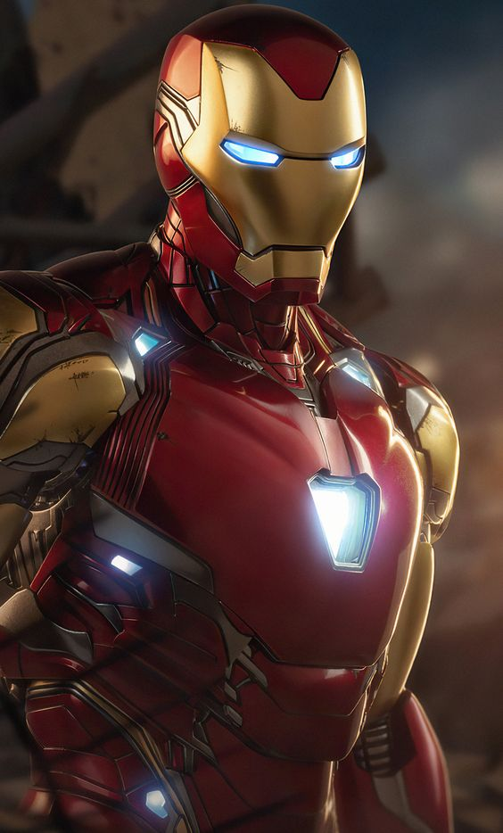

Wellcom to
Marvel super heroes world
This is spider man
spider man is a superhero which is created by sten leeand writer-artist Steve Ditko. ... His origin story
has
him
acquiring spider-related abilities after a bite from a radioactive spider; these include clinging to
surfaces,
superhuman strength and agility, and detecting danger with his "spider-sense."
SEE
MORE

Anthony Edward Stark
This is iron-man
Iron Man is a superhero appearing in American comic books published by Marvel Comics. ... Later, Stark
develops his suit, adding weapons and other technological devices he designed through his company, Stark
Industries. He uses the suit and successive versions to protect the world as Iron Man.
Learn
more
DC Universe Comics
Adam Strange
First appearance: Showcase #17(Nov1958)
Adam Strange is a fictional superhero appearing in American comic books published by DC Comics. Created
by editor Julius Schwartz with a costume designed by Murphy Anderson, he first appeared in Showcase #17.
Adam Strange made his live action debut in the television series Krypton, portrayed by Shaun Sipos
Mazing Man
First appearance: MazingMan #1(Jan1986)
Mazing Man is the title character of a comic book series created by Bob Rozakis and Stephen DeStefano and
published by DC Comics. The series ran for twelve issues in 1986, with additional special issues in
1987, 1988, and 1990Viewed as a harmless kook by his neighbors, he saves a child from being hit by a
truck in the first issue, earning him some respect and notoriety,